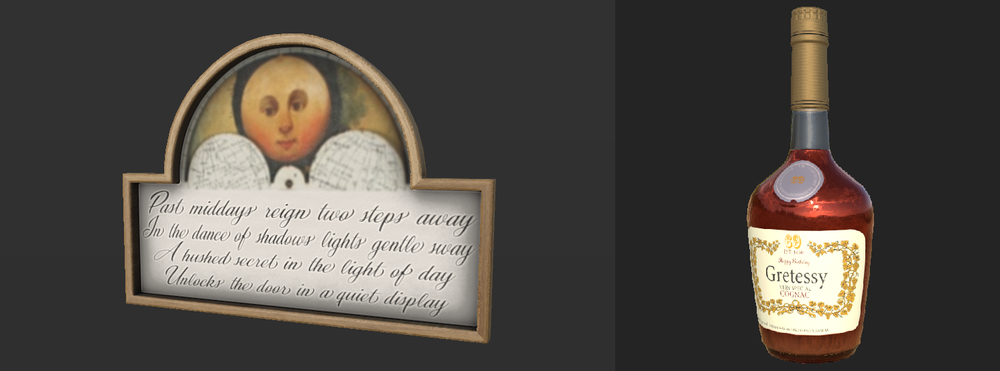

Monday, May 15th
Monday of the last week. The pressure to get a deliverable product was now on. I fixed the puzzles as well as our win and lose conditions. Moreover, I assisted Kevin in writing voice lines for the player's introduction to the game. As usual, I also helped fix any small issues that we found during the day.
A painting by Loke and a valuable prop by Wille.
Tuesday, May 16th
Even more work in Unreal Blueprints for me during Tuesday of week 9. I made the system for unlockables in the game, a way for players spend the money they acquire to get new bling. Playtesters loved being able to buy our golden lockpicks, flashlight and gloves; a token of their exeptional burglary skills. I also started working on a way to show where the player is hovering over UI, as we found during testing that some players struggled with intuitively knowing where they were pointing.

Wednesday, May 17th
Wednesday consisted mostly of continued work on the hover display system. I redesigned it slightly to combat some issues I encountered. The final version makes use of the fact that widget blueprints can inherit properties from their parent class. By having an image variable in a parent class, and letting all the UI widgets inherit from it, I can effectively change the properties of any widget's associated image by checking for the widget object that is being hovered. From there, I can get the position that is being hovered over in widget-space and offset the image to that position. This is the basic principle on which the system is built. Because the game is developed for PSVR2, we have three different ways to hover over a widget, being the right and left hands as well as with eye tracking. Therefore, I utilized three separate images in order to display all of them simultaneously.

Thursday, May 18th
National Holiday!
But as the deadline was the next day, myself and some other members of the team were here anyway, working away.
I finished up the hover display system by improving on it's overall visibility and started working on some quality of life changes for the player,
as well as extra information on the clipboard.

Friday, May 19th
Gold Presentation Day! As I was the one presenting the game, I spent a chunk of the day rehersing and practicing for it. As usual, I also helped out fixing whatever needed to be fixed whenever I was able to lend a hand. The presentation went excellently and I am very proud of what the team managed to accomplish during these nine weeks.